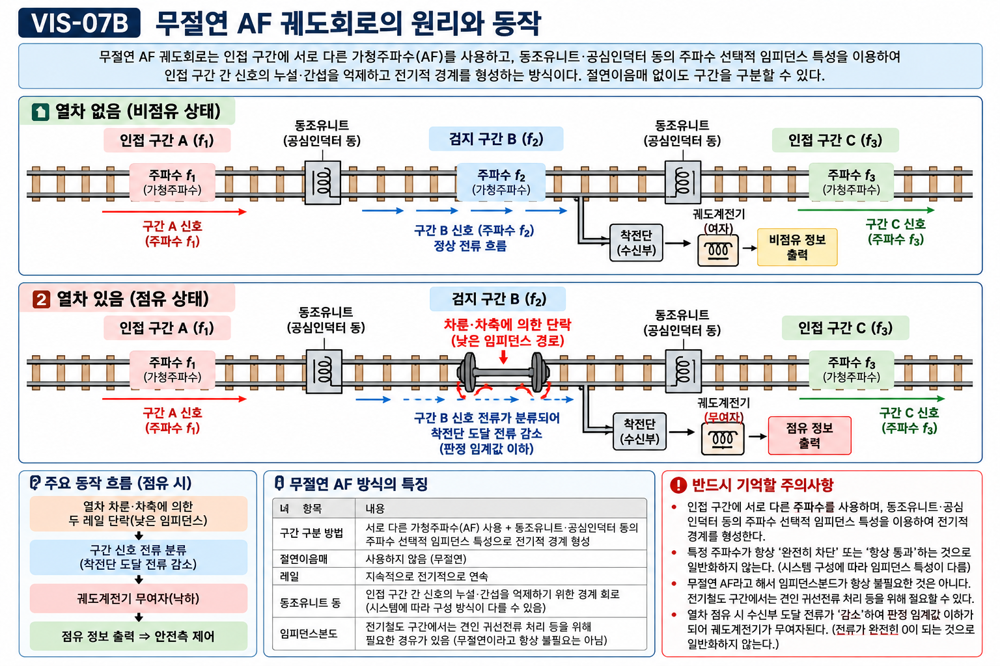

§ 0. 이 단원에서 반드시 먼저 알아야 할 용어 (8개)
07-06에서 이어지는 핵심 용어들입니다. 07-06을 먼저 학습한 뒤 읽으세요.
🔗 선행 단원: 07-06 궤도회로 원리와 종류 — 단락(Short)·계전기 여자/무여자·유절연·Fail-Safe 원칙을 먼저 확인하세요.
AF (Audio Frequency)
Audio Frequency — 가청주파수
사람의 귀로 들을 수 있는 주파수 대역(약 20Hz~20kHz). 궤도회로에서는 수백Hz~수kHz 대역을 신호전류로 사용한다. AF는 신호전류·주파수 방식 분류이며 절연방법(유절연/무절연)과는 독립된 기준이다.
무절연 (Jointless)
Jointless / Insulation-free
절연이음매(물리적 절연체)를 레일에 설치하지 않고, 주파수 차이 등 전기적 방법으로 인접 구간을 구분하는 방식. 절연방법 분류이며 신호전류의 주파수(AF 여부)와는 독립된 기준이다.
동조 (Tuning / Resonance)
Tuning / Resonance
LC 회로의 고유 주파수를 특정 신호 주파수에 맞추는 것. 직렬 LC 회로는 공진 주파수에서 임피던스 최소, 병렬 LC 회로는 최대가 된다. 이 특성으로 주파수별 임피던스 특성을 만들 수 있다. 실제 통과·억제 특성은 직렬/병렬 구성과 시스템 설계에 따라 달라지므로 단순히 “특정 주파수=통과/차단”으로 일반화하지 않는다.
동조유니트 (Tuning Unit)
Tuning Unit
특정 주파수에서 원하는 임피던스 특성이 나타나도록 설계한 주파수 선택 장치. 무절연 AF 궤도회로의 경계부에서 공심인덕터 등과 함께 전기적 절연개소를 구성하여 물리적 절연이음매 없이 구간을 분리한다.
공심인덕터 (Air-Core Inductor)
Air-Core Inductor
철심 없이 코일만으로 구성한 인덕터. 철심 인덕터에 비해 비선형성·포화 문제가 없어 특정 주파수 대역의 신호전류 제어에 적합하다. 동조유니트와 조합하여 경계부 전기적 분리에 사용한다.
분로저항 (Shunt Resistance)
Shunt Resistance
열차 차축이 두 레일을 단락할 때의 등가 저항. 충분히 낮아야 수신부에 도달하는 신호전류가 충분히 차단되어 계전기가 낙하(무여자)하고 열차가 안정적으로 검지된다. 분로저항이 높으면 검지 불량(분로불량) 발생 위험.
도상저항 (Ballast Resistance)
Ballast Resistance
자갈·콘크리트 등 도상(道床)을 통한 두 레일 사이의 누설 저항. 지나치게 낮아지면(습기·오염 등으로) 신호전류가 레일 밖으로 누설되어 오검지(가점유) 가능성이 커진다. 충분히 높게 유지되어야 한다.
분로불량 (Poor Shunt)
Poor Shunt / Shunting Failure
열차가 있는데도 차축 단락 저항이 충분히 낮지 않아 점유 검지가 불완전해지는 위험 현상. 차량 차륜·레일 표면의 오염·녹이 원인이 되며 열차를 "있음"으로 검지하지 못하는 안전측 위반 상황이다.
§ 1. AF(가청주파수)란 무엇인가
핵심 정의: AF = Audio Frequency = 가청주파수. 궤도회로에서는 사람의 귀로 들을 수 있는 주파수 대역(수백Hz~수kHz)의 교류 신호전류를 레일에 흘려 열차를 검지한다.
| 항목 | 내용 |
|---|
| AF 풀네임 | Audio Frequency (가청주파수) |
| 주파수 대역 | 수백 Hz ~ 수 kHz (일반적으로 수백Hz~3kHz 범위 사용) |
| 사용 이유 | 주파수 선택 특성을 이용해 인접 구간의 신호를 구별하고, 송·수신 및 동조회로를 통해 열차검지 신호를 안정적으로 처리할 수 있음 |
| 분류 기준 | 신호전류의 주파수 방식 분류. 절연방법(유절연/무절연)과는 독립된 기준 |
⚠️ AF = 무절연이라는 등식은 틀렸다. AF 주파수 방식을 쓰면서도 절연이음매(유절연)를 적용할 수 있다. AF와 무절연은 서로 다른 분류 기준이다.
★ 2축 독립 원칙: [절연방법] 유절연 / 무절연 ← 이것과 → [신호방식] DC / AF(가청주파수) 는 별개 축이다.
§ 2. 무절연 궤도회로 — 주파수로 구간을 구분하는 원리
핵심 질문: 절연이음매 없이 어떻게 인접 두 구간의 신호전류가 섞이지 않는가?
답: 구간마다 서로 다른 주파수(f₁, f₂, …)의 신호전류를 사용하고, 경계부에 동조유니트·공심인덕터 등을 설치하여 주파수 선택적 임피던스 특성으로 인접 구간 신호의 누설·간섭을 억제하고 전기적 경계를 형성한다.
무절연 경계 형성 원리 (3단계)
구간 A: 주파수 f₁ 신호전류 송신
→
경계부: 동조유니트·공심인덕터
→
주파수 선택적 임피던스 특성 형성
→
인접 구간으로 신호 누설·간섭 억제
→
구간 B: 주파수 f₂로 독립 운영
| 항목 | 유절연 궤도회로 | 무절연 AF 궤도회로 |
|---|
| 구간 경계 방법 | 절연이음매(절연체를 레일에 삽입) | 주파수 차이 + 동조유니트·공심인덕터로 전기적 경계 형성 |
| 절연이음매 | 필요 (구간마다 설치) | 불필요 (무절연) |
| 신호전류 | DC 또는 상용주파수 AC | AF 교류 (수백Hz~수kHz), 구간별 주파수 상이 |
| 임피던스본드·S-bond 등 | 전기철도 복궤조 등에서 귀선전류·신호전류 처리를 위해 적용 가능 | 시스템 구성에 따라 적용 방식이 다름. 무절연이라고 해서 임피던스본드가 항상 불필요한 것은 아님 |
| 레일 이음매 | 일반이음매 + 절연이음매 혼용 | 용접레일(장대레일) 전면 적용 용이 |
| 유지보수 | 절연이음매 상태 점검·교환 필요 | 절연이음매 자체의 유지보수 부담은 줄지만, 동조부·송수신부·경계회로의 점검은 필요 |
★ 무절연 = 절연이음매 없이 주파수·전기적 경계로 인접 구간을 구분하는 방식 (sig_065·066 기출 정의)
★ AF 궤도회로 = 가청주파수 대역의 신호를 이용하며 무절연 방식 구성에 활용되는 궤도회로 (sig_063·064 기출 정의)
§ 3. 무절연AF궤도회로 원리도

VIS-07B — 무절연 AF 궤도회로: 인접 구간은 서로 다른 AF 주파수를 사용하고, 경계부의 주파수 선택형 동조회로로 신호 누설·간섭을 억제한다. 열차 점유 시 차축 분로로 수신전류가 감소하여 점유를 검지한다.
그림 읽는 법:
① 구간 A에는 f₁, 구간 B에는 f₂의 신호전류가 흐른다.
② 경계부(동조유니트+공심인덕터)가 서로의 주파수에 대해 높은 임피던스를 나타내어 신호전류가 인접 구간으로 누설되는 것을 억제한다.
③ 열차 차축이 레일을 낮은 임피던스로 단락(shunt)하면 신호전류가 분류되어 수신부 전류가 감소하고, 판정 임계값 이하가 되면 계전기가 낙하(무여자)하여 점유로 검지한다. (Fail-Safe 원리는 07-06과 동일)
§ 4. 주요 구성 요소
| 구성 요소 | 역할 | 비고 |
|---|
| AF 송신기 | 구간별로 지정된 주파수(f₁, f₂…)의 신호전류를 레일에 공급 | 구간마다 주파수 상이 |
| AF 수신기 | 해당 구간 주파수의 신호전류를 선택적으로 수신·판정 | 주파수 필터 내장 |
| 궤도계전기 | 수신전류 정상 → 여자(비점유) / 수신전류가 판정 임계값 이하로 감소 → 낙하(점유) | 07-06과 동일 Fail-Safe 원칙 |
| 동조유니트 | 경계부에서 주파수 선택적 임피던스 특성을 형성하여 인접 구간 신호의 누설·간섭을 억제 | 공심인덕터 등과 조합 |
| 공심인덕터 | 경계부에서 동조유니트와 함께 전기적 절연개소 구성 | 철심 없어 비선형성 없음 |
| 레일(장대레일) | 신호전류 및 귀선전류의 통로. 절연이음매 없이 용접 연속 가능 | 무절연의 핵심 장점 |
동조유니트의 LC 회로 원리:
직렬 LC 회로: 공진 주파수에서 임피던스 최소 → 해당 주파수 전류를 잘 통과시킴
병렬 LC 회로: 공진 주파수에서 임피던스 최대 → 해당 주파수 전류를 차단
경계부 동조회로는 직렬·병렬 공진을 조합한 주파수 선택 특성을 이용해 인접 구간 신호의 누설·간섭을 억제하고 전기적 경계를 형성한다. 실제 회로의 임피던스 특성은 시스템 구성에 따라 달라지므로 “특정 주파수에서 항상 높다/낮다”로 일반화하지 않는다.
§ 5. 도상저항과 분로저항 — 오검지와 검지불량
궤도회로의 두 가지 위험 상황:
① 도상저항 저하: 열차 없는데 점유로 오검지 (가점유) → 열차 운행 지연
② 분로저항 증가 (분로불량): 열차 있는데 비점유로 오검지 → 안전측 위반, 충돌 위험
도상저항 (Ballast Resistance) — 높아야 한다
정의: 두 레일 사이 도상(자갈·콘크리트)을 통한 누설 저항
정상 시: 충분히 높음 → 신호전류가 레일 밖으로 누설되지 않음
저하 시: 강우·침수·오염으로 저하 → 신호전류 누설 → 수신부 전류 감소 → 계전기 낙하 → 가점유(False Occupation)
시험 포인트: 도상저항 낮아짐 → 오검지 가능성 증가
분로저항 (Shunt Resistance) — 낮아야 한다
정의: 열차 차축이 두 레일을 단락할 때의 등가 저항
정상 시: 충분히 낮음 → 신호전류가 차축으로 분류 → 수신부 전류 차단 → 계전기 낙하 → 정상 점유 검지
증가 시: 차륜·레일 표면 오염·녹 → 단락 불완전 → 수신부 전류 차단 불완전 → 계전기 미낙하 → 분로불량(Poor Shunt)
시험 포인트: 분로저항 높아짐 → 검지 불량 위험
| 구분 | 도상저항 | 분로저항 |
|---|
| 기준값 | 높을수록 좋다 | 낮을수록 좋다 |
| 문제 발생 조건 | 낮아질 때 (습기·오염) | 높아질 때 (표면 오염·녹) |
| 오검지 유형 | 가점유 (열차 없는데 있다고 표시) | 분로불량 (열차 있는데 없다고 표시) |
| 안전 위험도 | 운행 지연 (상대적으로 낮음) | 충돌 위험 (매우 높음, 안전측 위반) |
⚠️ 분로불량은 안전측 위반이다 — 열차가 있는데 없다고 판정하면 충돌 사고로 이어진다
★ 도상저항 = 두 레일 사이 누설경로 저항, 낮아지면 오검지 가능성 증가 (sig_067 기출 정의)
★ 분로저항 = 차축 단락 등가 저항, 충분히 낮아야 안정적 열차 검지 가능 (sig_069 기출 정의)
§ 6. 무절연AF궤도회로의 장점과 단점
✅ 장점
① 절연이음매 제거: 유지보수 비용·공수 대폭 감소
② 경계부 기계적 절연 축소: 시스템에 따라 동조부·S-bond·임피던스본드 등으로 전기적 경계를 구성하여 절연이음매 의존도를 줄일 수 있음
③ 장대레일 적용 용이: 용접 연속 레일에 절연 절단 불필요 → 승차감·유지보수 개선
④ 레일 절손 검지 가능: 폐회로식 구조에서 레일 단선 시 안전측(점유) 검지로 나타날 수 있음
⚠️ 단점
① 주파수 혼신 방지: 인접 구간 주파수 간 간섭 방지 설계 필요
② 고가 장비: AF 송수신기·동조유니트 등 고가
③ 도상저항 관리: 도상저항 저하 시 오검지 위험, 정기적 측정 필요
④ 분로불량 관리: 차량·레일 표면 상태에 따라 분로불량 발생 가능
§ 7. 레일 절손 검지 가능성
폐회로식 궤도회로의 부가 효과: 레일이 단선(折損)되면 신호전류 경로가 끊겨 수신부에 전류가 도달하지 못한다. 계전기가 낙하(무여자)하여 안전측(점유)으로 표시되므로 열차 운전에 경보를 줄 수 있다. 이것이 "레일 절손 검지 가능성"이다.
| 상황 | 계전기 상태 | 표시 | 안전 여부 |
|---|
| 정상 (열차 없음) | 여자(ON) | 비점유 | 정상 |
| 열차 점유 (단락) | 무여자(OFF) | 점유 | 정상 검지 |
| 레일 단선(절손) | 무여자(OFF) | 점유(안전측) | 안전측 — 운행 정지 유도 |
| 전원 이상 | 무여자(OFF) | 점유(안전측) | Fail-Safe 원칙 적용 |
★ 레일 절손 검지 가능성 = 폐회로식 궤도회로는 일부 레일 단선·회로 단절 시 안전측 점유로 나타날 수 있는 장점 (sig_071 기출 정의)
⚠️ 레일 절손 시 100% 검지를 보장하지는 않는다 — "검지 가능성"이 있다는 표현에 유의
§ 8. 시험 포인트 요약
★ AF = Audio Frequency(가청주파수). 신호전류 방식 분류 — 절연방법(무절연/유절연)과 독립된 별개 기준
★ 무절연 = 절연이음매 없이 주파수·전기적 경계로 인접 구간 구분. 절연방법 분류
★ 무절연AF궤도회로 핵심: 절연이음매 없이 주파수 선택형 전기적 경계를 구성하므로 장대레일 적용과 절연이음매 유지보수 측면에서 유리하다
★ 도상저항 낮아짐 → 오검지(가점유) 가능성 증가. 도상저항은 높아야 한다
★ 분로저항 높아짐(분로불량) → 열차 검지 불량 위험. 분로저항은 낮아야 한다
★ 레일 절손 → 폐회로식 궤도회로는 안전측(점유)으로 나타날 수 있다 (Fail-Safe 연장)
⚠️ AF = 무절연 등식 절대 금지. AF 방식을 쓰면서 유절연도 가능하다
⚠️ 동조유니트로 모든 무절연 궤도회로를 일반화하지 않는다 — 대표적 예시일 뿐
⚠️ 분로불량 = 안전측 위반. 열차가 있는데 없다고 검지 → 충돌 위험
§ 9. 관련 문제 — 철도신호 기출복원 CBT
📋 철도신호 기출복원 CBT · sig_063 · A+등급
다음 설명에 해당하는 용어·장치로 가장 적절한 것은? "가청주파수 대역의 신호를 이용하며 무절연 방식 구성에 활용되는 궤도회로이다."
① 임피던스 본드
② 분로불량
③ AF 궤도회로
④ 무절연 궤도회로
📋 철도신호 기출복원 CBT · sig_064 · A+등급
다음 중 「AF 궤도회로」에 대한 설명으로 옳은 것은?
① 두 레일 사이 누설경로를 나타내는 저항으로, 지나치게 낮아지면 오검지 가능성이 커질 수 있다.
② 전형적인 폐회로식 궤도회로에서 선로가 비어 있으면 궤도계전기가 여자되는 상태이다.
③ 절연이음매 없이 주파수·전기적 경계로 인접 궤도회로를 구분하는 방식이다.
④ 가청주파수 대역의 신호를 이용하며 무절연 방식 구성에 활용되는 궤도회로이다.
📋 철도신호 기출복원 CBT · sig_065 · A+등급
다음 설명에 해당하는 용어·장치로 가장 적절한 것은? "절연이음매 없이 주파수·전기적 경계로 인접 궤도회로를 구분하는 방식이다."
① 비점유 시 궤도계전기 여자
② 임피던스 본드
③ 가점유
④ 무절연 궤도회로
📋 철도신호 기출복원 CBT · sig_066 · A+등급
다음 중 「무절연 궤도회로」에 대한 설명으로 옳은 것은?
① 전형적인 폐회로식 궤도회로에서 선로가 비어 있으면 궤도계전기가 여자되는 상태이다.
② 열차 차축이 레일을 단락할 때의 등가 저항으로, 충분히 낮아야 안정적으로 열차를 검지할 수 있다.
③ 폐회로식 궤도회로는 일부 레일 단선·회로 단절 시 안전측 점유로 나타날 수 있는 장점이 있다.
④ 절연이음매 없이 주파수·전기적 경계로 인접 궤도회로를 구분하는 방식이다.
📋 철도신호 기출복원 CBT · sig_067 · A+등급
다음 설명에 해당하는 용어·장치로 가장 적절한 것은? "두 레일 사이 누설경로를 나타내는 저항으로, 지나치게 낮아지면 오검지 가능성이 커질 수 있다."
① 도상저항
② 임피던스 본드
③ 궤도회로
④ AF 궤도회로
📋 철도신호 기출복원 CBT · sig_068 · A+등급
다음 중 「도상저항」에 대한 설명으로 옳은 것은?
① 레일을 전기회로의 일부로 사용하여 특정 구간의 열차 점유 여부를 검지하는 장치이다.
② 실제 열차가 없는데도 궤도회로가 점유로 표시되는 현상이다.
③ 폐회로식 궤도회로는 일부 레일 단선·회로 단절 시 안전측 점유로 나타날 수 있는 장점이 있다.
④ 두 레일 사이 누설경로를 나타내는 저항으로, 지나치게 낮아지면 오검지 가능성이 커질 수 있다.
§ 10. §9 관련 문제 정답 및 해설
⚠️ 먼저 §9의 6문항을 풀고 난 뒤 확인한다. §9 문제 본문에는 정답 표시·정답 하이라이트·✓ 표시를 넣지 않는다.
| 문항 | 정답 | 핵심 해설 |
|---|
| Q1 · sig_063 | ③ | AF 궤도회로는 가청주파수 대역의 신호를 이용하며, 무절연 방식 구성에 활용될 수 있다. |
| Q2 · sig_064 | ④ | ① 도상저항, ② 비점유 시 계전기 여자, ③ 무절연 궤도회로의 설명이다. |
| Q3 · sig_065 | ④ | 무절연 궤도회로는 절연이음매 없이 주파수·전기적 경계로 인접 궤도회로를 구분하는 방식이다. |
| Q4 · sig_066 | ④ | ① 비점유 시 계전기 여자, ② 분로저항, ③ 레일 절손 검지 가능성의 설명이다. |
| Q5 · sig_067 | ① | 도상저항은 두 레일 사이 누설경로의 저항이다. 지나치게 낮아지면 신호전류 누설로 가점유 가능성이 커진다. |
| Q6 · sig_068 | ④ | ① 궤도회로, ② 가점유, ③ 레일 절손 검지 가능성의 설명이다. |
작업 메타 | 파일명: unit-07-07_FINAL_PUBLISH_v1.1.html | 버전: v1.1 FINAL LOCK
출처: 4.html(개념 102) · signal-exam-data.ts(sig_063~068) | 작성일: 2026-10-03
기술표현 검수 보강: 무절연 AF 경계의 동조회로는 시스템별 구성 차이를 반영하여 “주파수 선택적 임피던스 특성” 수준으로 서술. 임피던스본드 불필요 일반화 삭제.
보안 원칙: SOURCE 우선. 확인된 기출 문항(sig_063~068)만 수록. 임의 예상문제 없음.
2축 독립 원칙 준수: AF(신호방식) ≠ 무절연(절연방법). 등식 표기 금지.
v1.1 FINAL LOCK: ①§9 정답 노출 제거 및 §10 정답·해설 분리 ②동조유니트 “항상 높은 임피던스” 일반화 제거 ③무절연=임피던스본드 불필요 일반화 제거 ④차축 단락 시 “수신전류 차단”을 “감소·임계값 이하”로 교정 ⑤VIS-07B 신규 이미지 연결